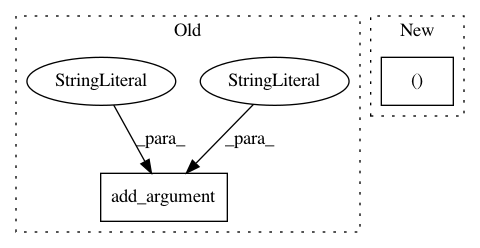

111a3673fdec28a1bc768659577f47cad2753ec6,scripts/sentiment_analysis/sentiment_analysis_cnn.py,,,#,43
Before Change
help="dropout applied to layers (0 = no dropout)")
parser.add_argument("--log-interval", type=int, default=30, metavar="N",
help="report interval")
parser.add_argument("--save-prefix", type=str, default="sa-model",
help="path to save the final model")
parser.add_argument("--gpu", type=int, default=None,
help="id of the gpu to use. Set it to empty means to use cpu.")
args = parser.parse_args()
print(args)
After Change
print("Use gpu%d" % args.gpu)
context = mx.gpu(args.gpu)
if args.data_name in ("MR", "Subj", "CR", "MPQA"):
vocab, max_len, output_size, train_dataset, train_data_lengths \
= process_data.load_dataset(args.data_name)
elif args.data_name == "TREC":
In pattern: SUPERPATTERN
Frequency: 4
Non-data size: 2
Instances
Project Name: dmlc/gluon-nlp
Commit Name: 111a3673fdec28a1bc768659577f47cad2753ec6
Time: 2019-05-16
Author: chenmengya11@post.eurasia.edu
File Name: scripts/sentiment_analysis/sentiment_analysis_cnn.py
Class Name:
Method Name:
Project Name: ray-project/ray
Commit Name: 841d93d366b1465959dba03512d64513c5ff568f
Time: 2020-11-25
Author: sven@anyscale.io
File Name: rllib/examples/multi_agent_cartpole.py
Class Name:
Method Name:
Project Name: NifTK/NiftyNet
Commit Name: e95e0fb5c4e735b05a4448617eded53338233564
Time: 2017-08-14
Author: wenqi.li@ucl.ac.uk
File Name: niftynet/utilities/user_parameters_default.py
Class Name:
Method Name: add_training_args
Project Name: NifTK/NiftyNet
Commit Name: b752af4b1c6f2b76173a840741e5bc61f7ab7c9b
Time: 2017-08-14
Author: wenqi.li@ucl.ac.uk
File Name: niftynet/utilities/user_parameters_default.py
Class Name:
Method Name: add_training_args